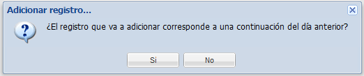
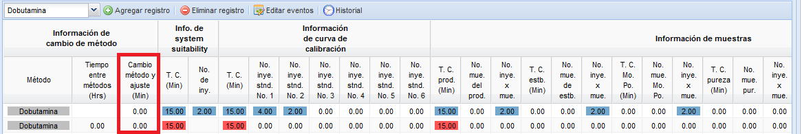
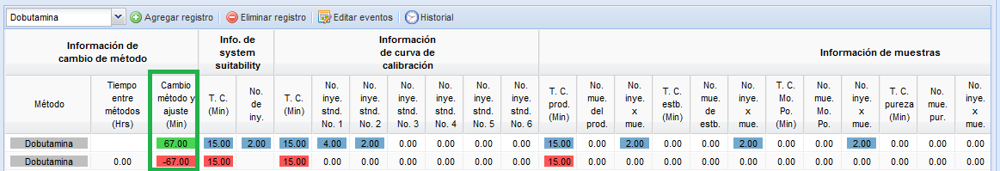
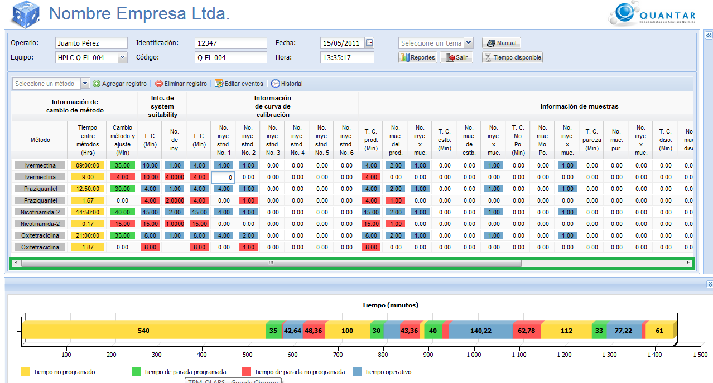

Figura 2.Selección del método y agregar registro.
Si es el primer registro del día el sistema desplegará una ventana para
preguntar si la corrida que desea registrar es una continuación del día
anterior, tenga en cuenta que si es una continuación del día anterior
el cambio de método y ajuste se registrará en cero(0)
porque se supone que la máquina biene trabajando en este método desde
el día anterior. Si desea registrar una corrida que no es continuación
de corrida, si se registrará el cambio de método y ajuste. En las
figuras 3, 4, y 5 se muestran :
- Figura 3:La ventana que pregunta que tipo de corrida se ingresara.
- Figura 4:Como se comporta el sistema cuando es una continuación de corrida.
- Figura 5:Como se comporta el sistema cuando NO es una continuación de corrida.
Si la corrida a registrar no es la primer corrida del día el
sistema no preguntará si es una continuación de corrida y se registrará
el cambio de método y ajuste.

Figura 3. Ventana de pregunta de continuación de corrida.

Figura 4. Comportamiento del sistema si es una continuación de corrida.

Figura 5. comportamiento del sistema si no es una continuación de corrida.
Ingresar datos de la corrida.
De doble click sobre la celda que desea modificar, digite el número o
seleccione la hora de acuerdo al campo, y de un click por fuera para
que la modificación sea guardada en el sistema. Ingrese en la fila
superior, los datos estándar o programados según el método, en la fila
inferior ingrese las perdidas, en la figura 6 de muestra el resultado
de la edición de varias celdas. Observe que en la parte inferior de la
pantalla hay un grafico que le indicará la productividad del día, este
atento a que en la grafica no aparescan valores negativos, ya que esto
puede ser un indicador de datos mal ingresados. REcuerde utilizar el
scroll(barra de desplazamiento) si la necesita para registrar todos los
datos de la corrida.

Figura 6.Ingreso de corridas analiticas